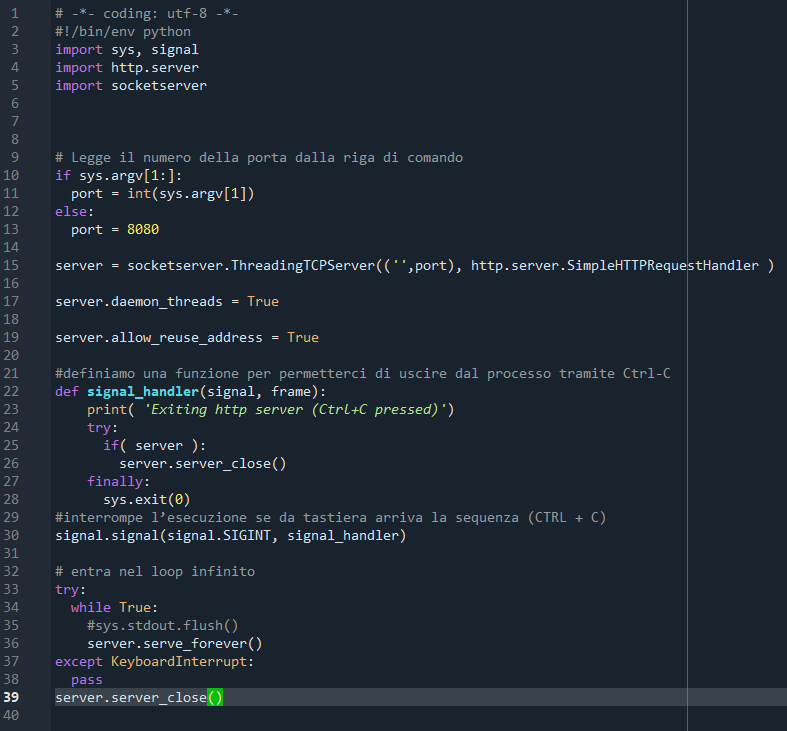

Contenuti principali
La pagina Contatti non esiste quindi porterà ad avere error 404

Server
-
Questa immagine raffiguare il file server.py che avviato tramite spyder funge da server per le mie pagine
- Il server è in ascolto sulla porta 8080
- Per visualizzare le pagine è necessario avviare il server e poi aprire il browser all'indirizzo http://localhost:8080/
- Il server serve le pagine HTML e le risorse statiche come immagini e file CSS
Breve spiegazione del file server.py raffigurato sopra
... to do